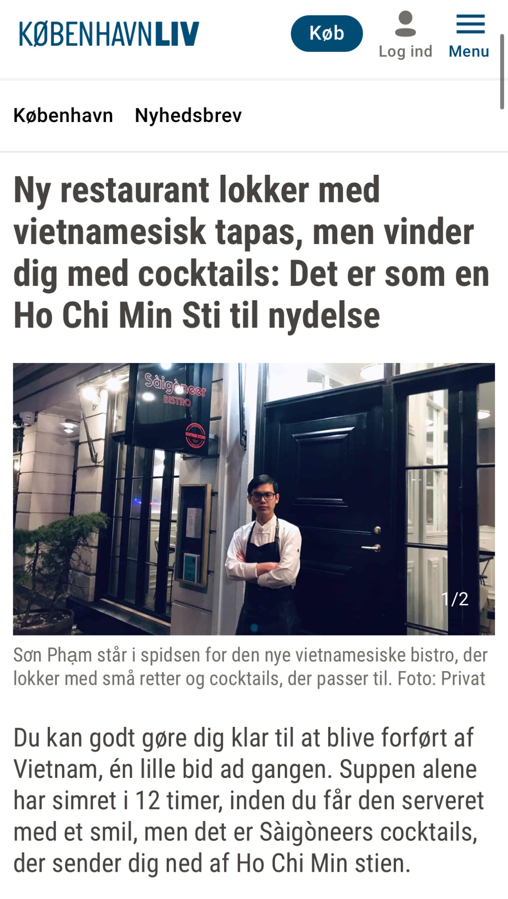

Øster Farimagsgade 12 · København Ø
Book dit bord i dag
… og lad dine smagsløg rejse til Saigon for en enkel aften i dejligt selskab, hyggelig atmosfære og smilende betjening.
Book bord
Find os her
Åbn i Google Maps
Kontaktinformation
-
Øster Farimagsgade 122100 – København Ø
- +45 4114 2100
- contact@saigonerbistro.dk
Åbningstider
Hvornår vi har åbent
- MandagLukket
- Tirsdag17:00 – 21:30
- Onsdag17:00 – 21:30
- Torsdag17:00 – 21:30
- Fredag17:00 – 23:00
- Lørdag17:00 – 23:00
- Søndag12:00 – 15:30
Køkkenet lukker kl. 21:00 (søndag kl. 15:00).
Læs mere om os
Kontraster på en tallerken
Skrevet af André Bentsen · andre@osterbroliv.dk

12 timer inden der bliver sagt vær så god, har kokken Sơn Phạm sat ingredienserne til sin Phở-suppe til at simre i køkkenet på Øster Farimagsgade. Her har Sàigòner Bistro slået dørene op til et hyggeligt sted, hvor små retter tager dig med på en smagsrejse direkte ud af Vietnam.